材料 10個分
※粉量を変えると自動計算されます
生地
レーズンバタークリーム
作り方
生地
STEP 1
ホームベーカリーで生地を作る
ホームベーカリーに材料をセットし「生地コース」で生地を作ります。コースが終わったら、次の作業に進みます。
ホームベーカリーに材料をセットし「生地コース」で生地を作ります。コースが終わったら、次の作業に進みます。
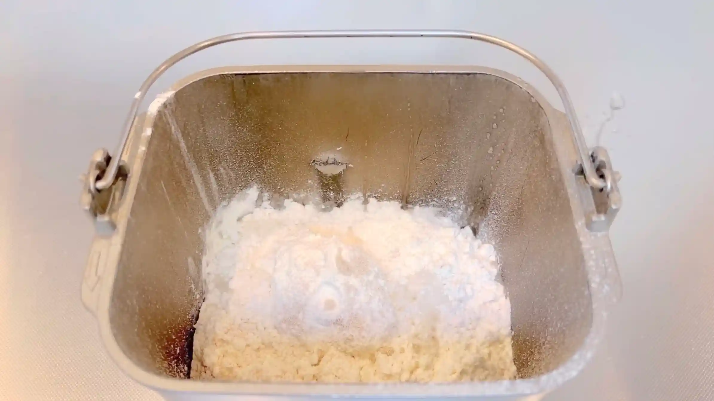
STEP 2
生地を取り出し、10分割する
1個あたり42gほどの分量になります。生地をできるだけ均等に分けることで、それぞれの発酵や焼き上がりをそろえやすくなります。
1個あたり42gほどの分量になります。生地をできるだけ均等に分けることで、それぞれの発酵や焼き上がりをそろえやすくなります。
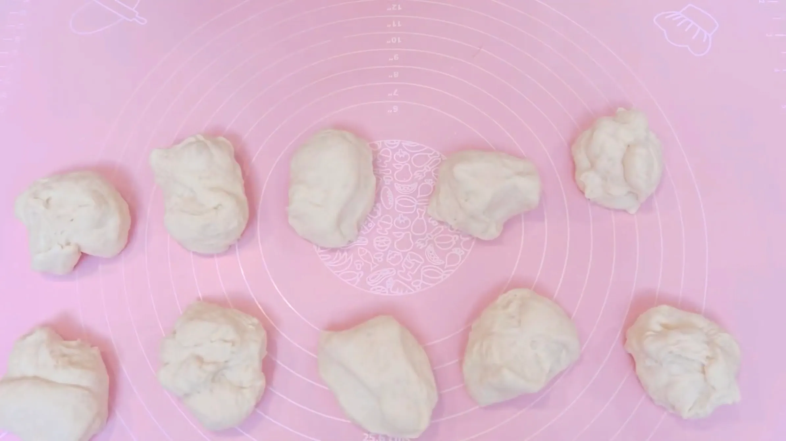
STEP 3
生地を俵型に軽く丸める（[動画 01:27]）
生地の両端を中央に入れるようにして、俵型に軽く丸めます。ここではきっちり丸める必要はなく、次の工程で平らに伸ばしやすい程度に形を整えます。
生地の両端を中央に入れるようにして、俵型に軽く丸めます。ここではきっちり丸める必要はなく、次の工程で平らに伸ばしやすい程度に形を整えます。
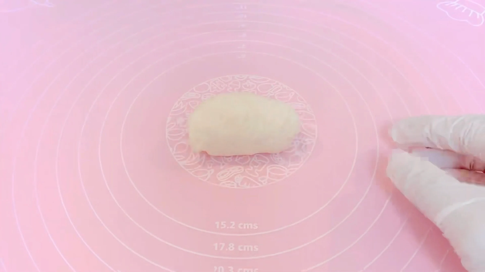
STEP 4
ラップをして、常温で20分おく
生地を休ませることで、生地がゆるみ、次の工程で伸ばしやすくなります。
生地を休ませることで、生地がゆるみ、次の工程で伸ばしやすくなります。
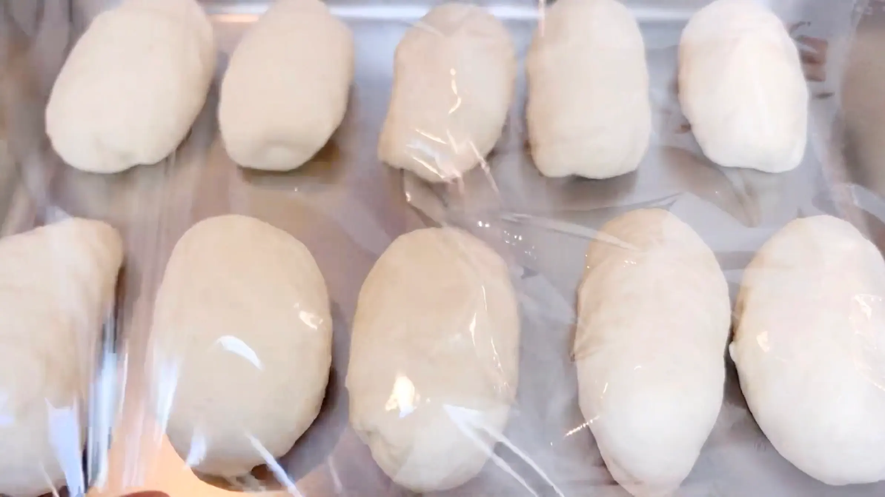
STEP 5
生地を四角く整える（[動画 02:36]）
生地全体の厚みを揃え、上下を折り畳みやすいように四角く整えます。
生地全体の厚みを揃え、上下を折り畳みやすいように四角く整えます。
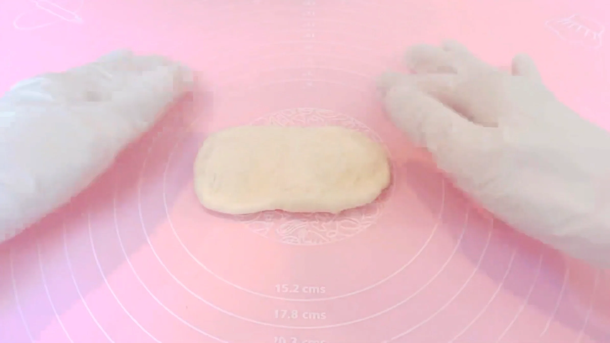
STEP 6
生地の上下を折り畳む（[動画 02:40]）
生地を上下から折り畳むことで、余計に生地を巻き込まず、表面を整えながら棒状に成形できます。中の気泡を必要以上につぶさないよう、やさしく折り畳みます。
生地を上下から折り畳むことで、余計に生地を巻き込まず、表面を整えながら棒状に成形できます。中の気泡を必要以上につぶさないよう、やさしく折り畳みます。
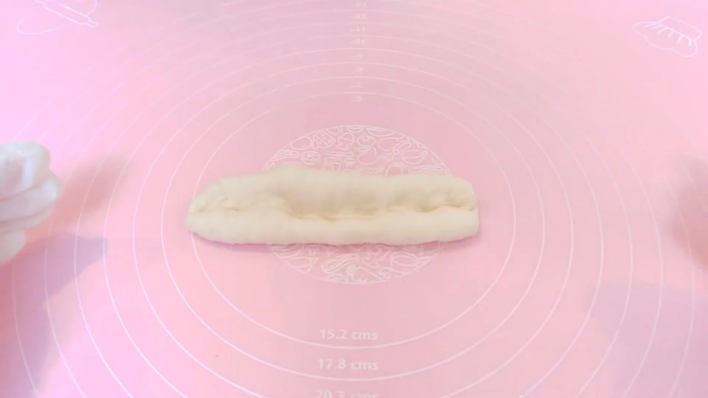
STEP 7
両端を閉じて15㎝の棒状に成形する（[動画 02:51]）
折り畳んだ生地の両端をしっかり閉じ、15㎝ほどの棒状に整えます。表面を張らせるように形を整えると、焼き上がりもきれいに仕上がります。
折り畳んだ生地の両端をしっかり閉じ、15㎝ほどの棒状に整えます。表面を張らせるように形を整えると、焼き上がりもきれいに仕上がります。
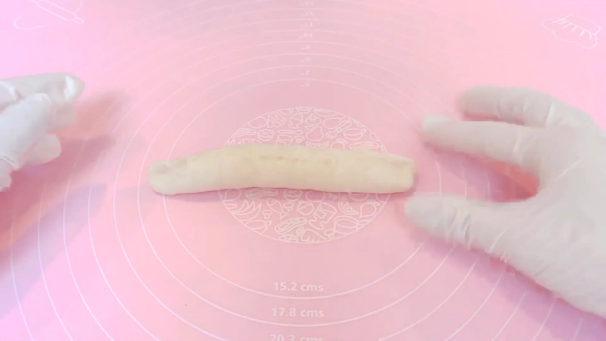
STEP 8
生地を天板にのせ、ラップをして50分おく
成形した生地を二次発酵させます。発酵時間は室温によって変わるため、50分を目安に、生地がひとまわりふっくらと膨らんだら次の工程へ進みます。
成形した生地を二次発酵させます。発酵時間は室温によって変わるため、50分を目安に、生地がひとまわりふっくらと膨らんだら次の工程へ進みます。
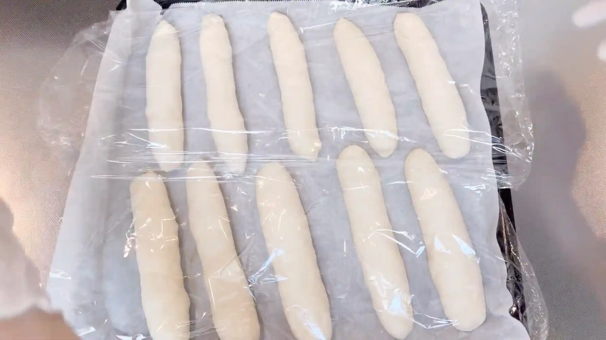
STEP 9
オーブンを210℃に予熱する
焼成前にオーブンを予熱しておきます。
焼成前にオーブンを予熱しておきます。
STEP 10
生地に霧吹きをする
焼成前に生地の表面へ霧吹きをします。表面が乾きすぎるのを防ぎ、やわらかな焼き上がりに整えます。
焼成前に生地の表面へ霧吹きをします。表面が乾きすぎるのを防ぎ、やわらかな焼き上がりに整えます。
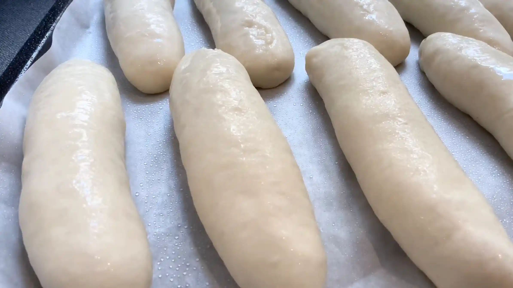
STEP 11
オーブン210℃で20分焼く
焼成中は表面の焼き色を確認しながら焼き上げます。焼き時間や温度は目安とし、ご家庭のオーブンに合わせて調整してください。
焼成中は表面の焼き色を確認しながら焼き上げます。焼き時間や温度は目安とし、ご家庭のオーブンに合わせて調整してください。
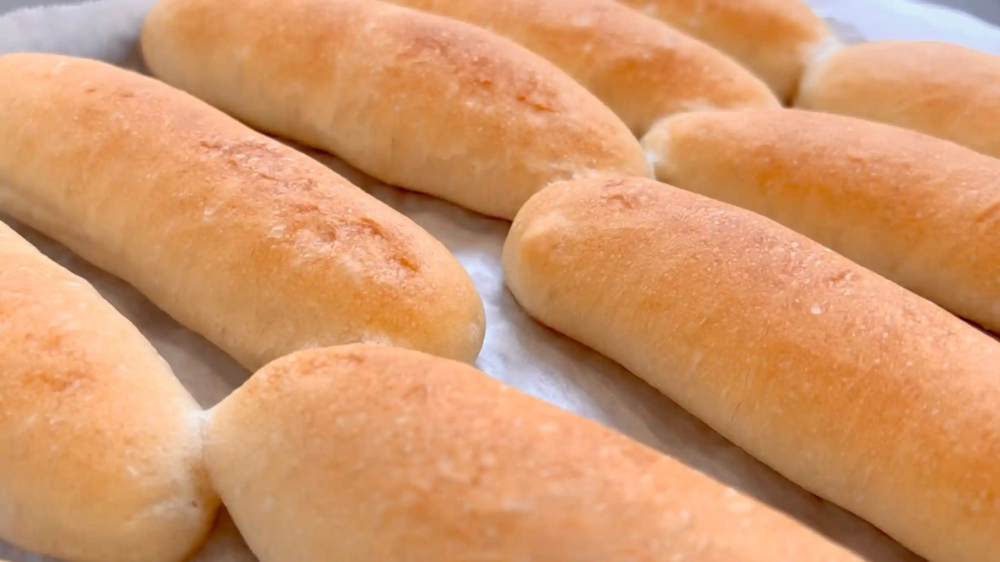
STEP 12
レーズンバタークリームを作る
STEP 13
レーズンバタークリームを挟む
パンの粗熱が取れたら、切り込みを入れ、レーズンバタークリームを挟みます。切れ込みは、パンの表面、もしくは斜めに入れると、クリームが少し見えて可愛く仕上がるのでおすすめです。
パンの粗熱が取れたら、切り込みを入れ、レーズンバタークリームを挟みます。切れ込みは、パンの表面、もしくは斜めに入れると、クリームが少し見えて可愛く仕上がるのでおすすめです。
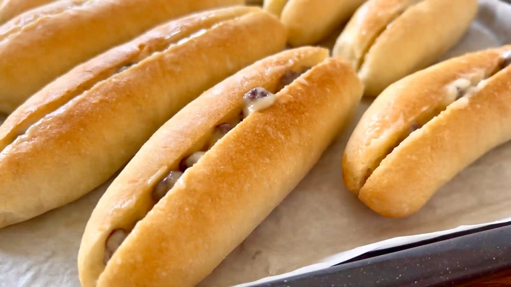
レーズンバタークリーム
STEP 1
バターをクリーム状にする
バターをなめらかなクリーム状になるまで混ぜます。バターが硬い場合は、レンジで少しずつ加熱してやわらかくしてから使います。
バターをなめらかなクリーム状になるまで混ぜます。バターが硬い場合は、レンジで少しずつ加熱してやわらかくしてから使います。
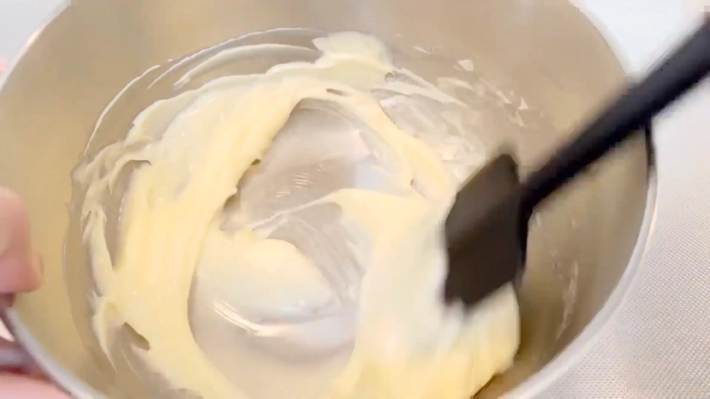
STEP 2
グラニュー糖を加え、混ぜる
グラニュー糖を加え、バターとよく混ぜ合わせます。全体がなめらかになるまで混ぜます。
グラニュー糖を加え、バターとよく混ぜ合わせます。全体がなめらかになるまで混ぜます。
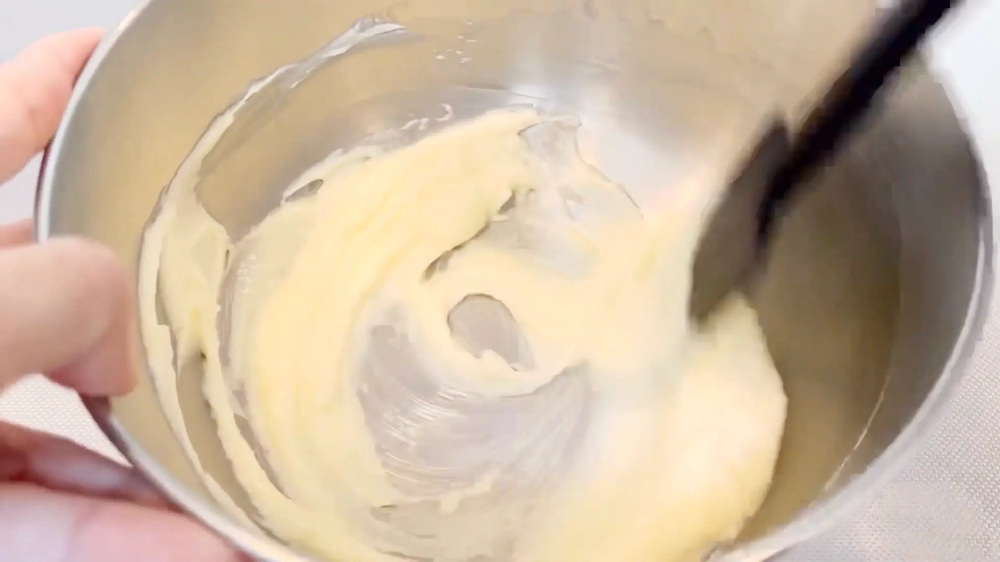
STEP 3
溶かしたホワイトチョコを入れ混ぜる
溶かしたホワイトチョコを加え、全体が均一になるまで混ぜ合わせます。ホワイトチョコが熱いままだとバターが溶けてクリームがゆるくなるため、少し冷ましてから加えます。
溶かしたホワイトチョコを加え、全体が均一になるまで混ぜ合わせます。ホワイトチョコが熱いままだとバターが溶けてクリームがゆるくなるため、少し冷ましてから加えます。
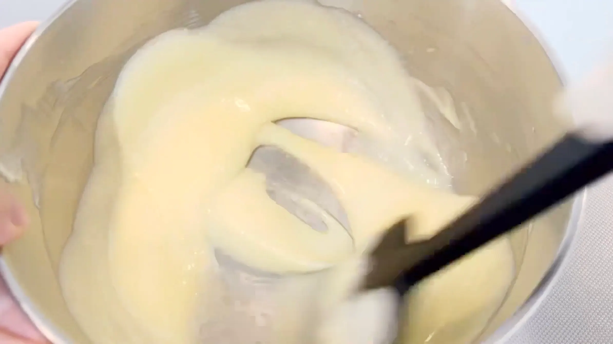
STEP 4
ラムレーズンを加え混ぜる
ラムレーズンを加えて混ぜ合わせます。ラムレーズンの水分や温度によってクリームがゆるくなることがあるため、やわらかすぎる場合は冷蔵庫で少し冷やし、パンに挟みやすい固さに調整します。
ラムレーズンを加えて混ぜ合わせます。ラムレーズンの水分や温度によってクリームがゆるくなることがあるため、やわらかすぎる場合は冷蔵庫で少し冷やし、パンに挟みやすい固さに調整します。
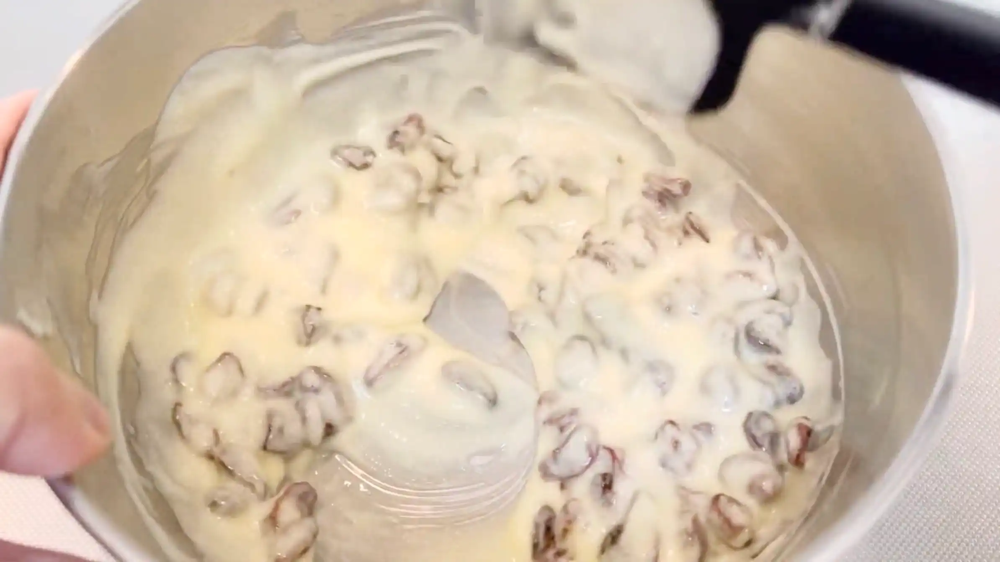
動画でチェック
おいしく作るためのワンポイントコラム
こんにちは、おなおドーナツです！
今回は、あの「六花亭 マルセイバターサンド」風の味わいを楽しめる『レーズンバターフランス』を作っていきます。ソフトなフランスパン生地と、リッチな自家製クリームの組み合わせが絶品です。身近な材料で美味しく焼き上げる3つのコツをご紹介していきます。
① 生地作りのコツ
ハードルが高そうに思えるフランスパンですが、ホームベーカリーで手軽にソフトフランスの生地を作れるのが嬉しいポイントです。レシピでは準強力粉を使っていますが、もしお家になければ強力粉9：薄力粉1の割合で代用するのがおすすめ。おうちにある粉をブレンドするだけで、ソフトフランスの歯応えとサクッとした食感をしっかり引き出すことができます。
② 焼成のコツ
本格的なハード系のパンを焼くとき、もしご家庭のオーブンでスチーム機能がない場合は、焼く前に霧吹きをするのが上手に焼き上げるコツ。生地の表面にしっかりと水分を補ってあげることで、焼き始めに皮が固まるのを防ぎ、外側をパリッと香ばしく仕上げます。
③ レーズンバタークリームのコツ
中のフィリングは、あの六花亭 マルセイバターサンドを再現したクリームに仕上げました。クッキーに挟んでも美味しい自慢のクリームを、今回は贅沢にもフランスパンにたっぷりと挟んでいます。バターにラムレーズンだけでなく、隠し味として溶かしたホワイトチョコを入れるのが濃厚なコクと滑らかさを生み出す一番のポイントです。
あら熱を取ってからクリームをたっぷり挟めば、もう本格ベーカリーにも負けない絶品菓子パンの出来上がりです！それでは、おうちパン作りの時間を一緒に満喫しましょう！
今回は、あの「六花亭 マルセイバターサンド」風の味わいを楽しめる『レーズンバターフランス』を作っていきます。ソフトなフランスパン生地と、リッチな自家製クリームの組み合わせが絶品です。身近な材料で美味しく焼き上げる3つのコツをご紹介していきます。
① 生地作りのコツ
ハードルが高そうに思えるフランスパンですが、ホームベーカリーで手軽にソフトフランスの生地を作れるのが嬉しいポイントです。レシピでは準強力粉を使っていますが、もしお家になければ強力粉9：薄力粉1の割合で代用するのがおすすめ。おうちにある粉をブレンドするだけで、ソフトフランスの歯応えとサクッとした食感をしっかり引き出すことができます。
② 焼成のコツ
本格的なハード系のパンを焼くとき、もしご家庭のオーブンでスチーム機能がない場合は、焼く前に霧吹きをするのが上手に焼き上げるコツ。生地の表面にしっかりと水分を補ってあげることで、焼き始めに皮が固まるのを防ぎ、外側をパリッと香ばしく仕上げます。
③ レーズンバタークリームのコツ
中のフィリングは、あの六花亭 マルセイバターサンドを再現したクリームに仕上げました。クッキーに挟んでも美味しい自慢のクリームを、今回は贅沢にもフランスパンにたっぷりと挟んでいます。バターにラムレーズンだけでなく、隠し味として溶かしたホワイトチョコを入れるのが濃厚なコクと滑らかさを生み出す一番のポイントです。
あら熱を取ってからクリームをたっぷり挟めば、もう本格ベーカリーにも負けない絶品菓子パンの出来上がりです！それでは、おうちパン作りの時間を一緒に満喫しましょう！


今回は、ソフトフランス生地にレーズンクリームをたっぷり挟んだ「レーズンバターフランス」をご紹介します！あの「六花亭 マルセイバターサンド」の味をおうちパンで再現した贅沢なレシピです。
コラムでは「生地作りのコツ」「焼成のコツ」「レーズンバタークリームのコツ」の3つのポイントをご紹介します。